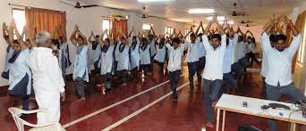
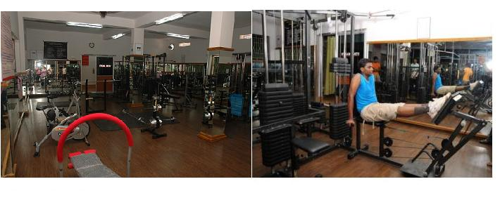
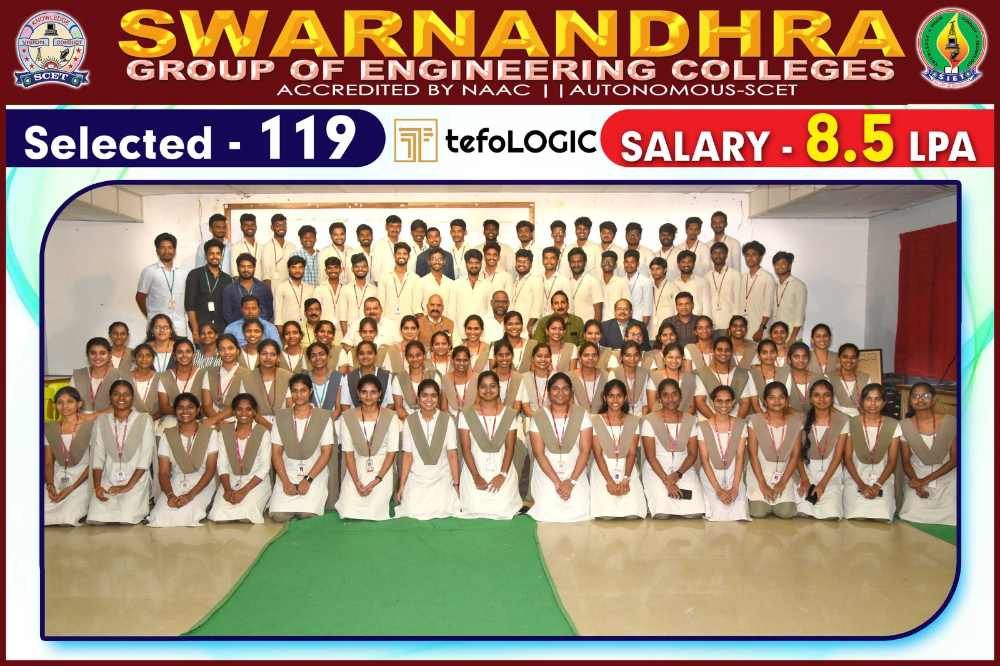

FEATURED COURSES
Diploma Course(3 Years)
UG COURSES-B.TECH(4 Years)
PG COURSES-M.TECH(2 Years)
CAMPUS FACILITIES
LAB:
Every experiment is a result of the finest laboratory. The laboratory is important for teaching computers, science, bio, designing, etc. Different labs proclaim distinct purposes so that students can learn new things to enhance their skills.
Students can conduct their experiments and gain experience. The purpose of labs is to learn, gain knowledge and understand the meaning of what happens. Poddar Group of Institutions have well-equipped physics, chemistry, zoology, and botany labs
with advanced equipment as well as 2 high-tech computer labs with high-speed LAN and internet facilities.
Classrooms are only giving theoretical knowledge whereas labs help you to enhance knowledge with practical application. The modern labs are well equipped and constructed with the latest technology. Laboratories in college support experiments so that practical knowledge can be expanded.
The laboratories are important in college as it helps to improvise the learning of students. For better learning, laboratories are important to develop at college.
YOGA:
Regular yoga practice promotes a healthy lifestyle and fosters a positive body image. Boosting Emotional Well-being:Yoga promotes emotional balance by encouraging self-awareness and self-acceptance. Students learn to regulate their emotions, build resilience, and develop a positive outlook on life.This programes improves the mental health and stablity management. This makes Student will stands active in a overall day.Stress Management:Yoga provides students with effective tools to manage stress and anxiety. Through breathing exercises, meditation, and mindful movement, students learn to calm their minds, reduce tension, and enhance their overall mental well-being. Improved Concentration and Focus:Regular practice of yoga enhances concentration and focus. The combination of physical postures, controlled breathing, and mindfulness techniques helps students develop better attention spans, leading to improved academic performance and productivity. Enhancing Physical Fitness:Yoga is a holistic exercise that strengthens and stretches the body.


LIBRARY:
The major objectives of college library are as under: to support the teaching programme of the college; to provide reading material for independent study and research; to encourage life- long learning among students to make them more enlightened and knowledgeable. Library is the first friend in Every students life.It gives the knowledge to the person and it improves the concentration to read book efficiently.Libraries play a vital role in providing people with reliable content. They encourage and promote the process of learning and grasping knowledge. The book worms can get loads of books to read from and enhance their knowledge. Moreover, the variety is so wide-ranging that one mostly gets what they are looking for.
GYM:
Physical fitness transcends mere weightlifting and jogging; it's a potent trigger for comprehensive development. When students partake in consistent physical activity, they unlock a plethora of advantages that surpass classroom boundaries. These gains encompass elevated mental well-being, fortified self-worth, heightened focus, and refined time management abilities. Engaging in sports or exercises cultivates discipline and resilience, crucial traits for life's challenges. Additionally, physical activities often foster camaraderie and teamwork, nurturing interpersonal skills. This blend of physical and psychological betterment equips students with tools essential for navigating both academic pursuits and future endeavours. Thus, advocating for regular physical engagement extends beyond health; it becomes an investment in holistic growth, fostering skills indispensable for a well-rounded life.
SPORTS:
Sports are an important element of a student's growth and development. They aid in the growth of psychological well-being as well as bodily health. Participating in sports and activities can help a kid develop a variety of skills, experience, and confidence that will help them develop their character.
1. For Mental Clarity.
2. Sports Are Directly Related to Health.
3. Sports Help To Reduce Stress.
4. Higher Education through Sports.
5. Sports Strengthens Social Bonds.
6.Enhances Self-Confidence and Self-Esteem.
7.Sports Can Assist With Time Management and Discipline.
8.A Persons Emotional Strength Is Enhanced by Participation in Sports.
BUS:
Qualified teaching staff and good facilities are all part of quality education. Transport services have now become just as important. Gone are the days when parents looked for educational institutions that are close to home. Most schools offer a pick-up and drop facility through their fleet of school and college buses. These yellow buses go far and wide picking up both students and staff. With such a large fleet, student safety becomes paramount. Technology provides strategic planning, execution and monitoring that ensures reduced risk.

CANTEEN:
PLACEMENTS
